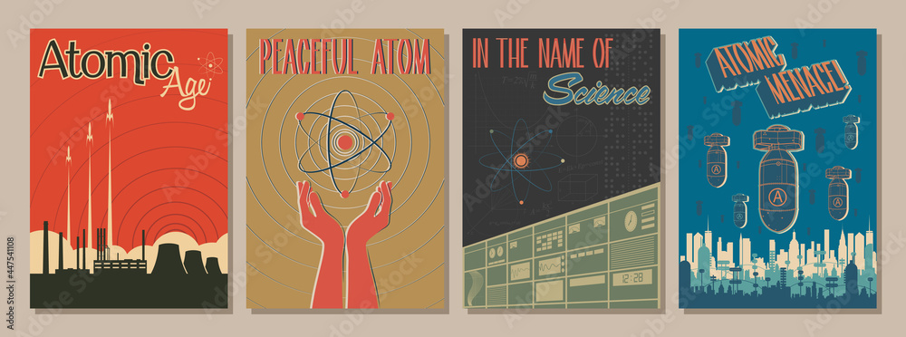
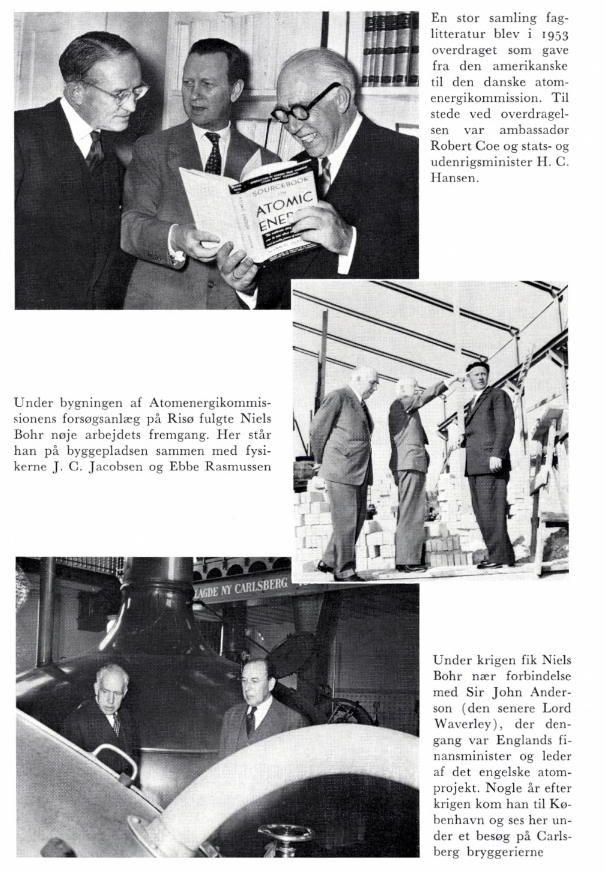
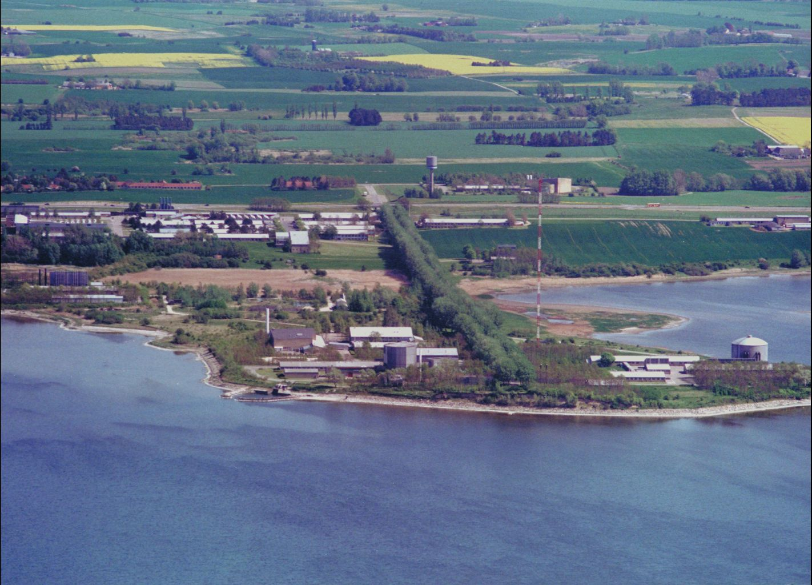

Kernekraft
Studieretningsdag
Jacob Debel
4 naturkræfter

Tyngdekraft

\[F_t = m \cdot g\]

\[F_G = G \cdot \frac{M \cdot m}{r^2}\]

\[R_{\mu \nu} - \frac{1}{2}R g_{\mu \nu} + \Lambda g_{\mu \nu} = \kappa T_{\mu \nu}\]
Elektromagnetisme

\[F_C = k \cdot \frac{q_1 \cdot q_2}{r^2}\]

\[\vec{F} =q \cdot \vec{v} \times \vec{B}\]
Den svage kernekraft
Står for radioaktive henfald.

\(\beta^-\) henfald
\[n \to p + W^- \to p + e^- + \bar{\nu}_e\]

Den stærke kernekraft
"Klistre" kvarker sammen til nukleoner (protoner og neutroner) og klistre nukleoner sammen til nuklider(atomkerner).


Isotoper
\[{}_Z^A X \quad \text{og} \quad A=Z+N\]
Eksempler
\[{}_{92}^{235}U \quad {}_{94}^{239}Pu \quad {}_2^4He \quad {}_{1}^1H \]
kernekort.dk
Bindingsenergi


- Hvor kommer denne bindingsenergi fra?
Einstein to the rescue

Massedefekt
\[\boxed{E_\text{binding} = m_\text{defekt}\cdot c^2}\]
\[m_\text{defekt} = Z \cdot m_p + N \cdot m_n + Z \cdot m_e - m_\text{atom}\] eller \[m_\text{defekt} = Z \cdot m_p + N \cdot m_n - m_\text{kerne}\]
Eksempel - Deuterium

Eksempel - Deuterium
- Find bestanddelene
- Beregn massedefekten i u
- Beregn bindingsenergien i MeV
- Del med antal nukleoner
- \({}_1^2H\) er lig 1 proton (1.007825 u), 1 neutron (1.008665 u),
1 elektron (0.000549 u)(ignoreres) og vejer \(m_d = 2.014102 u\)
- Udvælg selv et anden kerne fra kernekortet og eftervis bindingsenergien pr nukleon ved en tilsvarende beregning.
- Hvordan udvinder vi så denne energi?
Fission

Fissionssimulator
- Højreklik på billedet og åbn i en ny fane.

Mange datterkerner

En kædereaktion

- Hvor store er de frigivne energier?
Q-værdier
\[\boxed{Q = - \Delta m \cdot c^2\,,}\]
hvor \(\Delta m = m_\text{efter}-m_\text{før}\)
Jeg tager den første reaktion \[{}_{92}^{235}U + {}_1^0n \to {}_{92}^{236} U \to {}_{56}^{140} Ba + {}_{36}^{93} Kr + 3 \, {}_1^0 n\]
- Altså omkring 200 MeV per U-235 spaltning.
- Prøv I at tage en af de andre viste reaktioner.
Kernekraftværk
- (Højre-)Klik på billedet for at åbne simulatoren.
- Undervejs vil I se nogle oplyste tal. I burde nu have en idé om, hvordan de er beregnet.

Et livs energiforbrug
En gennemsnitsdansker bruger 117 GJ per år og har en forventet levetid på 81.8 år.
- Hvor meget energi bruger en gennemsnitsdansker på et helt liv?
- Hvor mange U-235 fissionsprocesser skal der til, for at dække dette energibehov?
- Hvor mange kg U-235 svarer dette til?
- Hvor meget fylder denne mængde U-235?
- Hvor mange kg U-235 skal der bruges for at dække dette energibehov?
- Hvor meget fylder denne mængde U-235?
Et kernekraftværk benytter typisk beriget uran, hvor 3% er U-235 og 97% er U-238.
- Hvor meget vil den berigede uran fylde, for at dække et livs energiforbrug?

Downside?

- Det er datterkernerne, den er gal med!
Radioaktiv stråling

Hvad ville I vælge?

- Understøttende statistik: https://atomkraftbogen.dk/tal-og-statistik/
Fremtidens danske reaktorer
Seaborg Technologies
Copenhagen atomics
Atomic age 1945-1973

Risø 1958-

